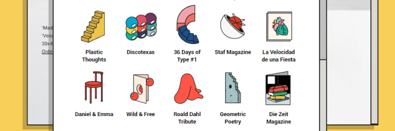

веб-сайт
про
брутализм
в
стиле
брутализм
网
站
型
的
野
蛮
主
义
的
关
于
野
蛮
主
义
историческая справка
1960
Брутализм — это стиль в архитектуре, который характеризуется сильной, монументальной формой
и использованием необработанного, рудничного камня
брутализм стал популярен
из-за небольших бюджетов на строительство, а также он совпадал с общим философским настроем послевоенной европы
а что веб?
2014
в вебе смысл такой же,
как и в исходном направлении. этот стиль хочет выйти за рамки шаблонных
и одинаковых сайтов
раньше Приверженцы брутализма в дизайне ценили функциональность и стремились сохранить её приоритет
над внешним видом
НО сейчас стиль преобразился.
2020-
спорные решения как реакция молодого поколения на лёгкость и однообразие
современного веб-дизайна
особенности стиля
лоу-кволити изображения
везде один шрифт
намеренные ошибки
ядовитые тона
чистый фон. либо наоборот гипертекстурированный
обзор сайта в этом стиле
http://marianopascual.me/
работает только в вебе
продумана заставка если долго ничего не кликать
все ссылки открываются как новые окна, нет ховеров
можно перейти в стартовое состояние, все кнопки подписаны, состояние системы понятно пользователю
скорее это игровой сайт, чем информативный. например тут тоже есть внутренние настройки
ховеры не работают
на ссылках внутри выдуманной системы,
на остальном это либо приятные анимации, либо небольшой скейл

так как этот сайт иллюстратора и дизайнера, я считаю, что он максимально справляется со своей задачей —
он откладывается в памяти, он яркий и интерактивный. и он полснотью сделан в стилистике этого
иллюстратора
в начало